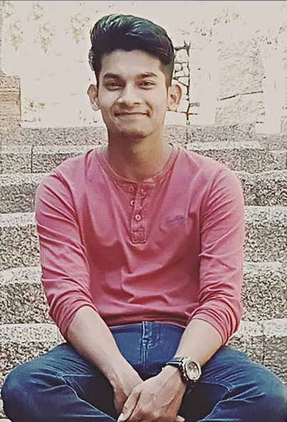

ALFRED FRANCIS
BCA 2nd Year Student
Kristu Jayanti College
I'm from Ernakulam,Kerala.I did my schooling till 3 STD in Haryana currently settled in Banglore from 2003 and I've done my schooling in Kendriya Vidayala AFS Yelahanka.In addition to my regular course work as a BCA student, I make up time to edit photos,videos.My major interest is in animation and Visual effects. In particular, I am interested in learning more about photoshop, so that I can use the knowledge for further editing,creating and enhancing normal pictures.I like playing games and watching movies, as they wonderfully allow to merge fun, education, training, self-development and personal growth.
